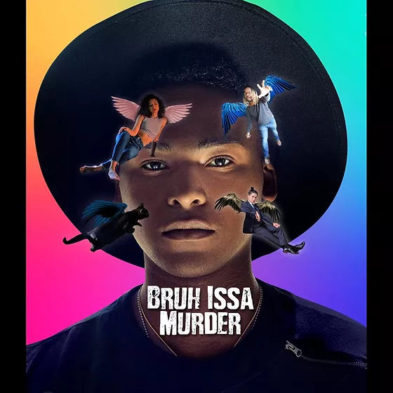

5 Black True Crime Podcasts You Should Know
The rise in popularity for true crime is a phenomenon that few understand.
Seemingly overnight, many of us, especially women, grew obsessed with true crime. There's something
about diving into the twisted and baffling stories that often seem stranger than fiction.
And stranger still, according to Ozy, nearly 75% of true crime podcast listeners are women.
But one group is missing from the scene: Black people. As a culture, Black people have a unique way of telling stories, turning the simplest
stories and weaving them into enthralling tales. But rest assured, there are a few podcasts out there!
That's why for this Black History Month we wanted to highlight five true crime podcasts
by Black content creators that you should give a listen!
Bruh Issa Murder

The murder of his cousin is what sparked Andre's interest in true crime,
but it was the lack of diversity of voices like him in the true
crime community that inspired Bruh Issa Murder. Now, together with
his friends Battle, Kelly, and Robert, they cover true crime cases and serial killers of color
while highlighting music from lesser-known artists.
Check them out on Bruh Issa Murder.
About Me
Allyson is a 33-year-old writer hailing from Kansas City, MO. When she isn't writing
about her hometown or discovering her newest favorite song, she loves to game; read manga
comics, and thrillers; watch TV, movies, and animation, and try new restaurants.